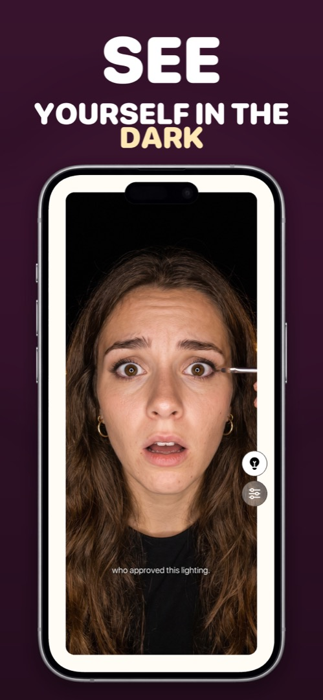

A Mirror App With Light — for Dark Cars, Dim Bathrooms and Late Nights
The times you most need a mirror are the times there's no decent light: the car before you walk in, a restaurant bathroom lit by a single moody bulb, a hotel room at 6am, the back row of a cinema. A mirror app with a built-in light solves this in a way the iPhone's flashlight can't.
Why the flashlight doesn't help
The iPhone's LED flash is on the back, next to the rear cameras. The front camera has no LED at all — when you take a selfie in the dark, iOS briefly flashes the whole screen white (Apple calls it Retina Flash). That works for a photo, but it only fires for a fraction of a second when you press the shutter. You can't hold it on to actually look at yourself.
The screen is the light
The trick a good mirror app uses is the same one Retina Flash uses, held permanently: turn the edges of the display bright at maximum brightness, and the screen becomes a small ring light pointed straight at your face. Because the light surrounds the camera, it's even and shadow-free — closer to a makeup mirror than a phone torch. A good one also lets you warm or cool the light, because foundation looks different under a warm bulb than under daylight.
Getting the most out of it
- Distance: 20–30 cm from your face. Closer than that and the light is harsh; further and it falls off quickly.
- Kill backlight: don't sit with a window or lamp behind you — the camera will expose for the background and your face goes dark.
- Brightness: a mirror app should max it automatically. If you've got Low Power Mode on, the ceiling is lower, so switch it off for a moment if you need every bit of light.
- Combine with zoom for eyeliner, contact lenses and teeth — light plus magnification is what you actually need in a dark bathroom.
How to do it in Mirrorly
This is Mirrorly's ring light. To use it:
- Open Mirrorly. Screen brightness goes to maximum on its own.
- Tap the light-bulb button. The border of the screen becomes a ring light and lights your face. (If Mirrorly detects bad lighting, it'll suggest this itself.)
- Open settings (the sliders icon) to shift the light warmer or cooler.
- Hold the phone about a hand's length away, facing you, with nothing bright behind you. Tap the bulb again to switch the light off.

Mirrorly is free to try on the App Store. A full-screen iPhone mirror with a ring light, zoom and maximum brightness. Three free checks, then a one-time unlock — no subscription, no photos saved, no account, no ads.